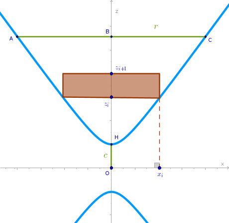

Circular Two-sheeted Hyperboloid
Problem
Find the volume of a two-sheeted circular hyperboloid of revolution given by its Cartesian equation:
$$\begin{equation} \frac {x^2}{a^2} + \frac {y^2}{a^2} - \frac {z^2}{c^2} = -1 \end{equation}$$Either the height of the hyperboloid along the \(z\) axis \(h = HB\) or the corresponding value along the \(x\) axis \(r = AB = BC\) is given, see the drawing.
Solution
Choose a thin right circular cylinder as a primitive part and consider the corresponding half of the two-sheeted circular hyperboloid:
Cut \(HB\) into \(n\) line segments of equal length such that:
$$z_iz_{i + 1} = \Delta z = \frac {h}{n}$$ The volume of the \(i-\)th primitive cylinder then is: $$V'_i = \pi x_i^2 \frac {h}{n}$$To obtain the value of \(x_i^2\) cut the two-sheeted circular hyperboloid with the \(y = 0\) plane and substitute \(y = 0\) into (1):
$$\frac {x_i^2}{a^2} - \frac {z_i^2}{c^2} = -1$$ $$x_i^2 = a^2\Big(\frac {z_i^2}{c^2} - 1\Big) =$$ $$\frac {a^2}{c^2}(z_i^2 - c^2)$$But:
$$z_i = c + \frac {h}{n} \times i$$ $$z_i^2 = c^2 + \frac {2ch}{n} i + \frac {h^2}{n^2} i^2$$and hence:
$$x_i^2 = \frac {a^2}{c^2}\Big(c^2 + \frac {2ch}{n} i + \frac {h^2}{n^2} i^2 - c^2\Big) =$$ $$\frac {a^2 h}{c^2}\Big(\frac {2c}{n} i + \frac {h}{n^2} i^2\Big)$$ $$\begin{equation} V'_i = \frac {\pi a^2 h^2}{c^2n}\Big(\frac {2c}{n} i + \frac {h}{n^2} i^2\Big) \end{equation}$$The volume of the entire hyperboloid in question is the sum volumes of its two halves:
$$V' = 2 \times \sum_{i=1}^n V'_i =$$ $$\frac {2 \pi a^2 h^2}{c^2n} \sum_{i=1}^n\Big(\frac {2c}{n} i + \frac {h}{n^2} i^2\Big) =$$ $$\frac {2 \pi a^2 h^2}{c^2n}\Big(\frac {2c}{n}\sum_{i=1}^n i + \frac {h}{n^2} \sum_{i=1}^n i^2\Big) =$$ $$\frac {2 \pi a^2 h^2}{c^2n}\Big(\frac {2c}{n} \frac {n(n + 1)}{2} + \frac {h}{n^2} \frac {n(n + 1)(2n + 1)}{6}\Big)$$ $$\frac {2 \pi a^2 h^2}{c^2}\Big(c\Big(1 + \frac {1}{n}\Big) + \frac {h}{6}\Big(2 + \frac {3}{n} + \frac {1}{n^2}\Big)\Big)$$Applying the limit to \(V'\) as \(n \to +\infty\) we obtain:
$$V = \lim_{n \to +\infty} V' =$$ $$V = \frac {2 \pi a^2 h^2}{c^2}\Big(c \lim_{n \to +\infty}\Big(1 + \frac {1}{n}\Big) + \frac {h}{6} \lim_{n \to +\infty}\Big(2 + \frac {3}{n} + \frac {1}{n^2}\Big)\Big) =$$ $$\bbox[#e8e8e8,3pt]{\frac {2 \pi a^2 h^2}{c^2}\Big(c + \frac {h}{3}\Big)}$$
Elliptic Two-sheeted Hyperboloid
has the following Cartesian equation:
$$\begin{equation} \frac {x^2}{a^2} + \frac {y^2}{b^2} - \frac {z^2}{c^2} = -1 \end{equation}$$We choose thin right elliptic cylinders as primitive parts positioned in the same way as right circular cylinders are positioned within the circular hyperboloid. The volume of the \(i-\)th primitive cylinder then is: $$V'_i = \pi x_i \times y_i \times \frac {h}{n}$$
To express \(x_i\) and \(y_i\) in given terms we first cut the two-sheeted elliptic hyperboloid with the \(y = 0\) plane and substitute \(y = 0\) into (3):
$$\frac {x_i^2}{a^2} - \frac {z_i^2}{c^2} = -1$$ $$x_i = \frac {a}{c} \sqrt {z_i^2 - c^2}$$and then we cut the hyperboloid with the \(x = 0\) plane and substitute \(x = 0\) into (3):
$$\frac {y_i^2}{b^2} - \frac {z_i^2}{c^2} = -1$$ $$y_i = \frac {b}{c} \sqrt {z_i^2 - c^2}$$where for \(z_i\) we have:
$$z_i = c + \frac {h}{n} \times i$$ $$z_i^2 = c^2 + \frac {2ch}{n} i + \frac {h^2}{n^2} i^2$$Then:
$$V'_i = \pi \frac {a}{c} \sqrt{z_i^2 - c^2} \times \frac {b}{c} \sqrt{z_i^2 - c^2} \times \frac {h}{n} =$$ $$\frac {\pi abh}{c^2n}\Big(c^2 + \frac {2ch}{n} i + \frac {h^2}{n^2} i^2 - c^2\Big) =$$ $$\begin{equation} \frac {\pi abh^2}{c^2n}\Big(\frac {2c}{n} i + \frac {h}{n^2} i^2\Big) \end{equation}$$We observe that (2) and (4) are almost identical: the \(a^2\) in (2) is replaced with \(a \times b\) in (4) and hence:
$$\bbox[#e8e8e8,3pt]{V = \frac {2 \pi abh^2}{c^2}\Big(c + \frac {h}{3}\Big)}$$\(\blacksquare\)